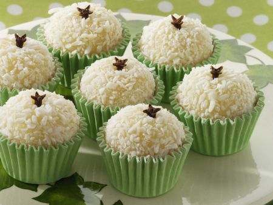

Beijinho
Ingredientes:
- 1 lata de leite condensado
- 1 colher de sopa de manteiga
- 150 gramas de coco ralado
- Cravos da índia para decorar
Modo de Preparo:
Em uma panela misture todos os ingredientes. Leve ao fogo brando e misture por aproximadamente 10 a 15 minutos. Transfira o conteúdo para um recipiente e deixe esfriar. Leve a geladeira por cerca de meia hora para poder fazer as bolinhas. Coloque um cravo da índia no topo da bolinha para decorar.